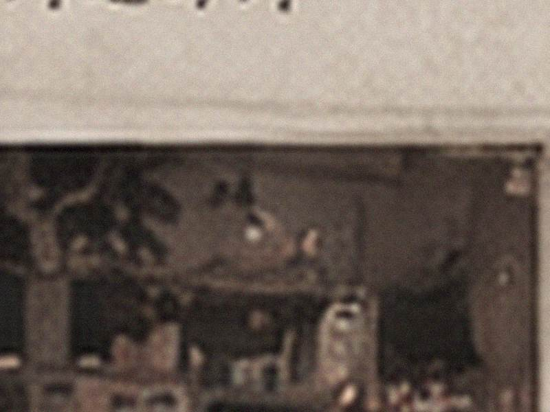

白鸽音像 · 旧照档案
本批可核22张 / 顾客投稿 / 老相册散页 / 闭店扫描
关闭照片档案
最近导入
属性缺失
公开留言
文件日期 / 上传日期分栏保存
位置：D:\BAIGE_ARCHIVE\PHOTOS\2008\
2008
5张
东侧通道。货架很密，柜台还靠窗。
暑假 · 同学投稿。背面只写“她又走太快”。
散场时随手按到的一张，人物被同学挡住。

县城街边 · 原片无准确日期。
活动散场 · 人物只在画面边缘。